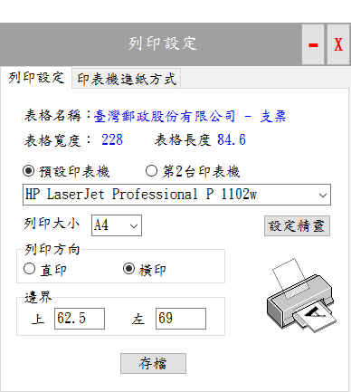
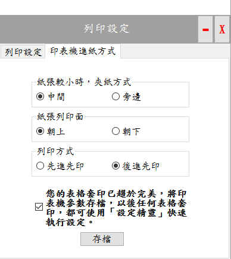

印表機設定
要執行表格套印前需先指定印表機，並配合印表機的特性執行相關設定，例如設定邊界距離、文字列印方向、並經由反覆測試及調整，才能正確執行套印。
- 選擇預設印表機：
- 預設印表機1：執行表格套印的主要印表機。
- 預設印表機2：同一表格由2台印表機進行套印，例如支票核發管理時，需要印磁性字體(MICR)及存款戶彩色商標，需要使用不同的印表機進行套印，以節省成本，並符合需求。
- 選擇印表機：指定預設印表機，例如「HP LaserJet Professional P1102w」。
- 表格設定工作頁：參考資料 印表機使用入門
- 「列印紙張」：預設為「A4」，列印時以A4的尺寸(搭配邊界設定)傳送至印表機列印，若不設定為「A4」，系統將依表格實際大小傳送至印表機進行套印。
- 備註：
- 某些印表機不能列印尺寸太小的表格時，請設定為A4。
- 若印表機出現紙張不符的訊息，此時就不能設為A4，或由作業系統中的「裝置和印表機」選擇您的印表機後，執行「自訂紙張大小」。
- 邊界：為配合印表機的特性，將整體列印內容往某個方向偏移，類似word(文書處理軟體)的邊界功能。
- 文字列印方向：讓列印內容以直印(印表機的預設選項)或橫印(將列印文字轉90度)的方式進行列印。
- 設定精靈：當您第一次成功套印表格時，因該要執行這個功能，以便系統在套印其他表格時，本軟體可以提供表格設定工作頁的設定精靈(於選擇印表機後，顯示設定精靈按鈕)軟體會依照這些參數自動計算，「邊界」的參考值。

印表機設定視窗–表格設定工作頁
- 印表機進紙方式
- 記錄印表機的特性，供日後參考。
- 存檔：當您第一次成功套印表格時，因該要執行這個功能，以便系統在套印其他表格時，本軟體可以提供表格設定工作頁的設定精靈(於選擇印表機後，顯示設定精靈按鈕)軟體會依照這些參數自動計算，「邊界」的參考值。

印表機設定視窗–印表機進紙方式工作頁